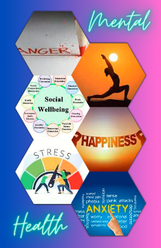

Welcome to our Mental Health Information Page
This webpage provides valuable information on maintaining good mental health and well-being.
These are some points on mental health
- Routine: Establishing and maintaining a daily routine can provide a sense of stability and control, contributing to overall mental well-being.
- Mindfulness: Engaging in mindfulness practices, such as meditation or deep breathing exercises, can help reduce stress and improve focus.
- Physical Activity: Regular physical activity releases endorphins, which can boost mood and reduce symptoms of anxiety and depression.
- Connection: Maintaining meaningful connections with others, even through brief interactions or phone calls, can provide support and reduce feelings of loneliness.